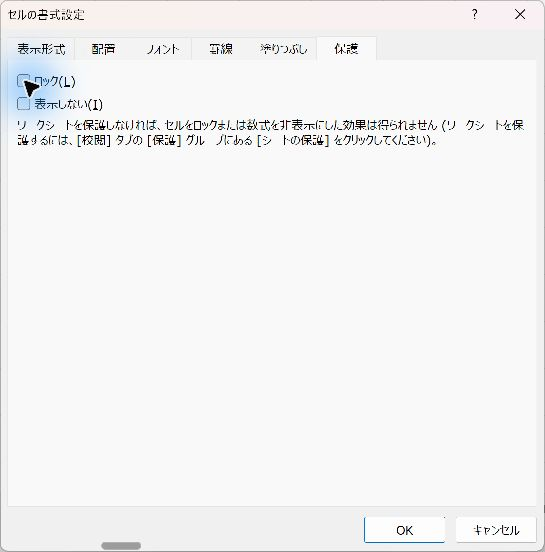
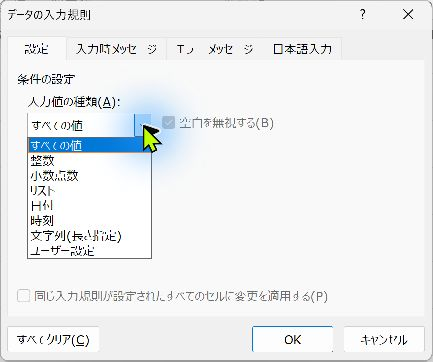
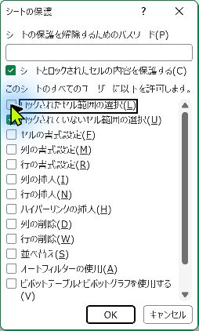

Excelで入力欄だけ編集できるようにする：入力規則とシート保護
部署に配る入力用のExcelで、数式が上書きされる・部署名がばらばらになる・おかしな日付が入る、といったミスを減らす方法です。入力規則で入力できる値を決め、シートの保護で入力欄以外を守ります。VBAは使いません。
目次（8項目）
💡 やりたいこと
部署に配る入力用のExcelファイルで、こんなことが起きていませんか。
- 合計の数式が、誰かに数字で上書きされていた
- 部署名が「営業」「営業部」「営業１課」とばらばらに入力される
- 日付の欄に「来週」「11/31」のような値が入る
Excelの「データの入力規則」と「シートの保護」を組み合わせると、入力欄だけ編集でき、入力できる値も決められるファイルが、VBAなしで作れます。
手順1：入力欄を決めて色を付ける
まず、人が入力するセルと、数式や見出しのセルを分けます。入力欄に薄い色を付けておくと、使う人にも「ここに入力する」と伝わります。
| A 日付 | B 部署 | C 社員番号 | D 金額 | E 消費税（数式） | |
|---|---|---|---|---|---|
| 2 | （入力） | （入力） | （入力） | （入力） | =ROUNDDOWN(D2*0.1,0) |
この例では A2:D50 が入力欄、E列が数式です。
手順2：入力欄の「ロック」を外す
Excelのセルは、最初からすべて「ロック」されています。ただし、ロックはシートを保護したときに初めて効きます。保護する前に、入力欄だけロックを外しておきます。
- 入力欄（A2:D50）を選びます。
- Ctrl+1 で「セルの書式設定」を開きます。
- 「保護」タブで、「ロック」のチェックを外して「OK」を押します。
数式のE列はロックしたままにします。数式を見せたくない場合は、同じ画面の「表示しない」にチェックを入れると、保護後に数式バーに式が表示されなくなります。

社員番号の列（C2:C50）は、先に表示形式を「文字列」にしておきます。Ctrl+1 →「表示形式」タブ →「文字列」。こうしないと「000123」が「123」になり、手順3の「6桁」のチェックで止められます。Microsoft 365 版 Excel（Windows、バージョン 2610）で、表示形式が「標準」のセルでは「000123」が止められ、「文字列」のセルでは「000123」が入力でき「00012」が止められることを確認しました。
手順3：入力規則で、入力できる値を決める
入力欄を選び、「データ」タブ → 「データの入力規則」を開きます。「設定」タブの「入力値の種類」で、次のように決めます。
3-1. 部署：リストから選ばせる
- 別のシート（例：「リスト」）のA1:A5に、部署名を1つずつ入力しておきます。
- B2:B50を選び、「入力値の種類」で「リスト」を選びます。
- 「元の値」に
=リスト!$A$1:$A$5と入力します。
セルに▼が出て、部署を選べるようになります。表記のゆれがなくなるので、後の集計（SUMIFSやピボットテーブル）が正しく動きます。
3-2. 日付：日付の範囲を決める
A2:A50で「入力値の種類」を「日付」、「データ」を「次の値の間」にして、開始日と終了日を入れます。「11/31」のような存在しない日付や、文字は入力できなくなります。
3-3. 金額：0以上の整数だけ
D2:D50で「整数」、「次の値以上」、最小値「0」にします。
3-4. 社員番号：6桁で、重複させない（ユーザー設定）
C2:C50で「ユーザー設定」を選び、「数式」に次の式を入れます。
6文字で、同じ番号が他にないときだけ入力できます。先頭の0を残すため、C列の表示形式は先に「文字列」にしておきます。
3-5. 入力時メッセージとエラーメッセージ
- 「入力時メッセージ」タブ：セルを選んだときに説明を出せます（例：「社員番号を6桁で入力してください（例：000123）」）。
- 「エラー メッセージ」タブ：決まりと違う値を入れたときの表示を決めます。「スタイル」は、入力を止める「停止」が基本です。「注意」「情報」は、確認のうえで入力できてしまいます。
- 「日本語入力」タブ：社員番号や金額の欄を「オフ（英語モード）」にしておくと、全角数字の入力を減らせます。

画面の名前・ボタンの位置は、環境により結果が異なる場合があります。お使いの版で表示を確認してください。
手順4：シートを保護する
- 「校閲」タブ → 「シートの保護」を押します。
- パスワードは任意です。付ける場合は、忘れると解除できなくなるので、管理者の間で決めた場所に控えておきます。
- 「このシートのすべてのユーザーに許可する操作」で、「ロックされていないセル範囲の選択」だけにチェックを残し、「ロックされたセル範囲の選択」は外します。
- 「OK」を押します。
こうすると、Tab や Enter を押したときに、入力欄だけを順に移動するようになります。数式のセルは選ぶこともできません。

シートの追加・削除・名前の変更も防ぎたいとき
「校閲」タブ →「ブックの保護」で、シートの構成（追加・削除・名前の変更・並べ替え）を保護できます。シートの保護とは別の機能です。
あとで直すとき
「校閲」タブ →「シート保護の解除」で解除し、直してから、もう一度保護します。
手順5：配る前にテストする
- 数式のセルに入力しようとして、止められるか。
- 入力規則と違う値（存在しない日付、マイナスの金額、5桁の社員番号）が止められるか。
- Tab で入力欄だけを移動できるか。
- 最終行まで入力したときに、数式の範囲が足りているか。
知っておきたい限界と注意
| 注意点 | 内容と対策 |
|---|---|
| 貼り付けると入力規則をすり抜ける | 別の場所からコピーして貼り付けると、入力規則に合わない値も入ってしまうことがあります。回収した後に「データの入力規則」の▼→「無効データのマーク」を押すと、決まりに合わない値が赤い丸で囲まれます。 |
| 保護はセキュリティではない | シートの保護は、うっかりミスを防ぐための機能です。見られて困る情報は、そもそも配るファイルに入れません。 |
| テーブルが自動で広がらない | 保護したシートでは、テーブル（Ctrl+T）の行が自動で増えません。入力行を先に多めに用意しておきます。 |
| 並べ替え・フィルターができない | 必要なら、保護の画面で「並べ替え」「オートフィルターの使用」にもチェックを入れます（ロックされたセルを含む範囲は並べ替えできません）。 |
| ユーザーごとに入力欄を分けたい | 「校閲」タブ →「範囲の編集を許可」で、範囲ごとにパスワードを付けられます。 |
貼り付け時の入力規則の扱いは、環境により結果が異なる場合があります。
入力欄だけを一度に消したいとき
毎月入力欄を空にして使い回す場合は、入力欄だけ範囲選択して初期化する方法 と組み合わせると、数式を消さずに入力欄だけクリアできます。